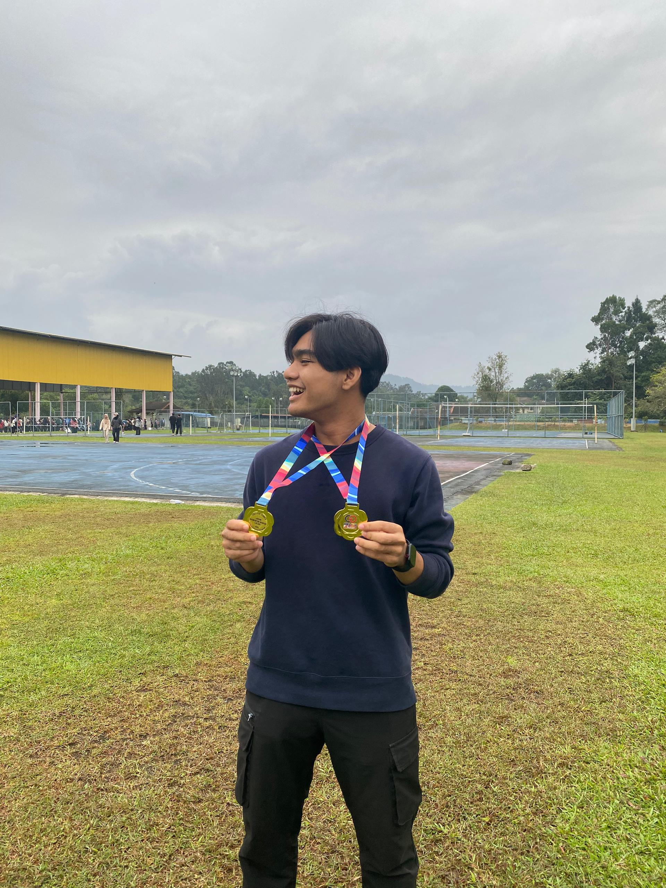
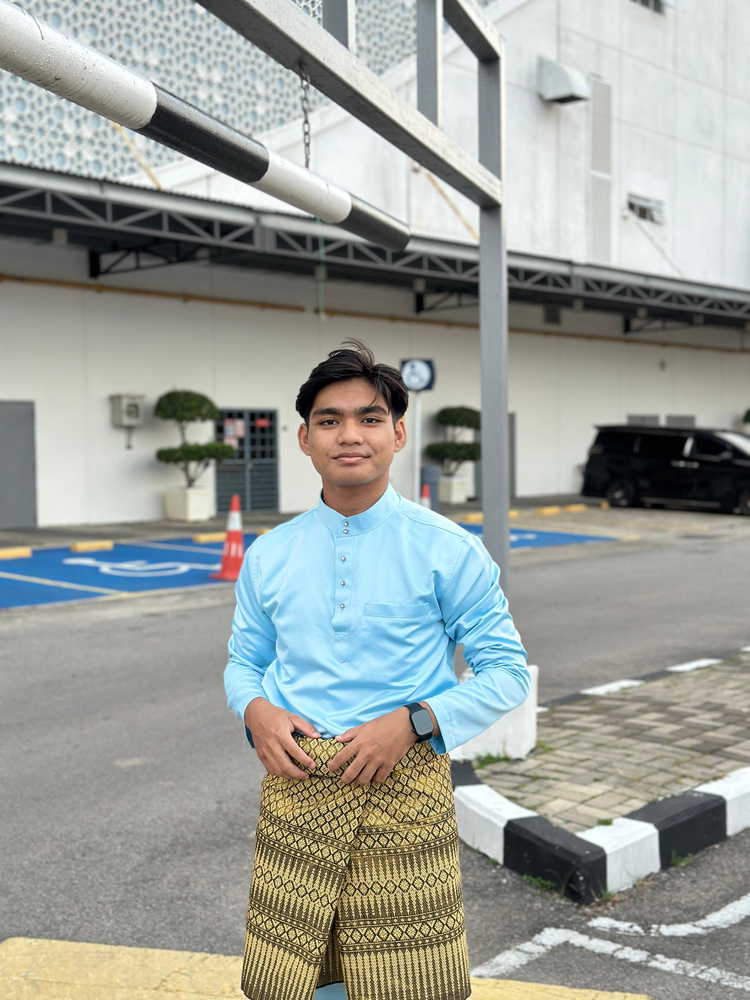
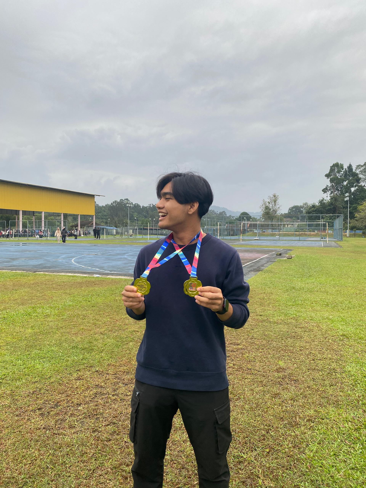
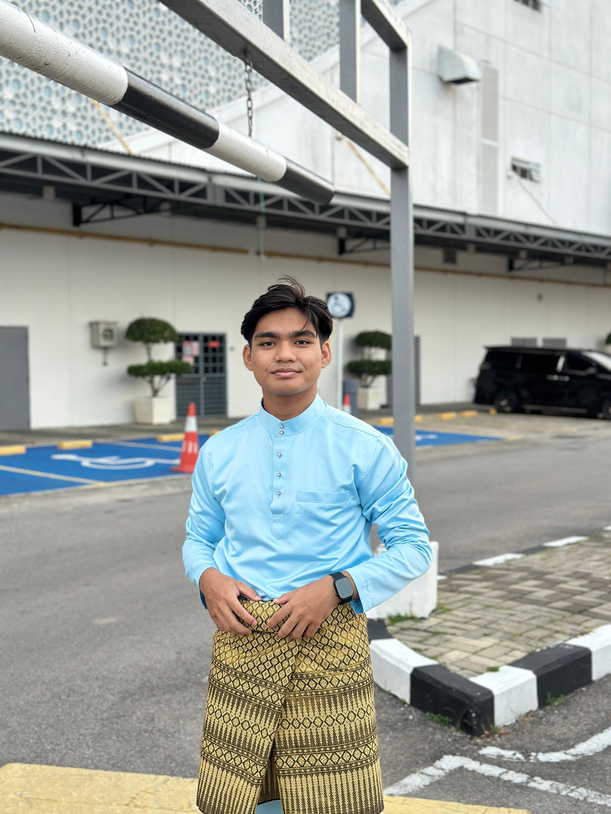

Biodata
 



My name is Wan Amirul Mubarak bin Wan Kamaruddin, 21 years old, currently pursuing a Diploma in Information Management at UiTM.
I am actively involved in campus activities and have served as a member of the Student Representative Council (MPP), where I developed leadership and teamwork skills.
As a badminton athlete, I regularly participate in competitions and have achieved top positions, demonstrating discipline, focus, and competitive spirit.
Key skills include leadership, organization, communication, time management, and problem-solving. I enjoy playing badminton, reading, and engaging in community activities.